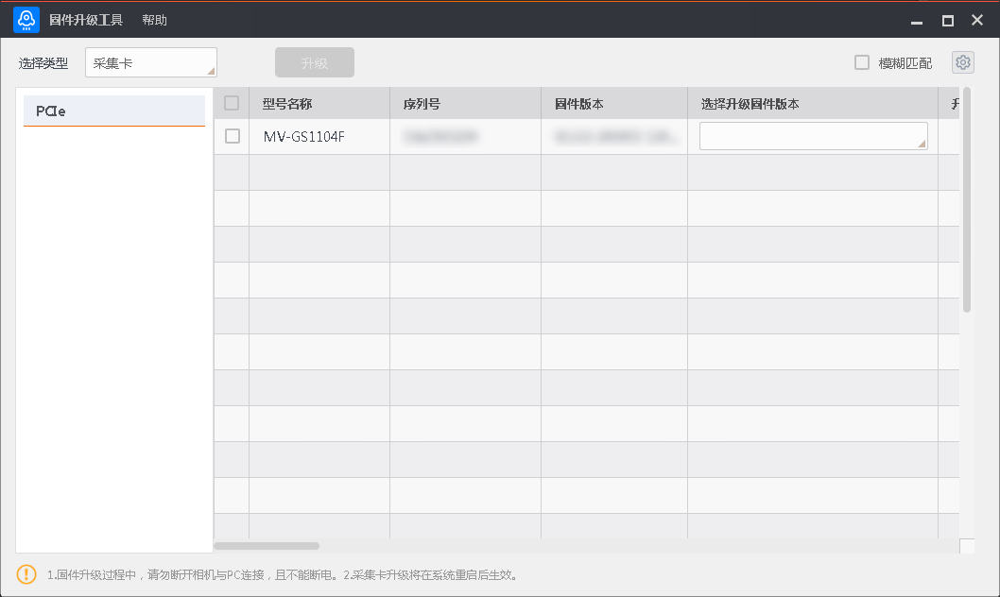
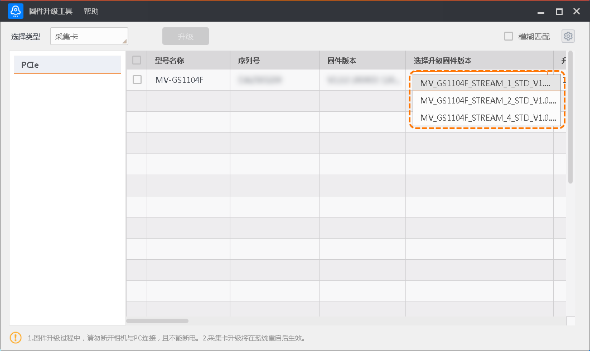
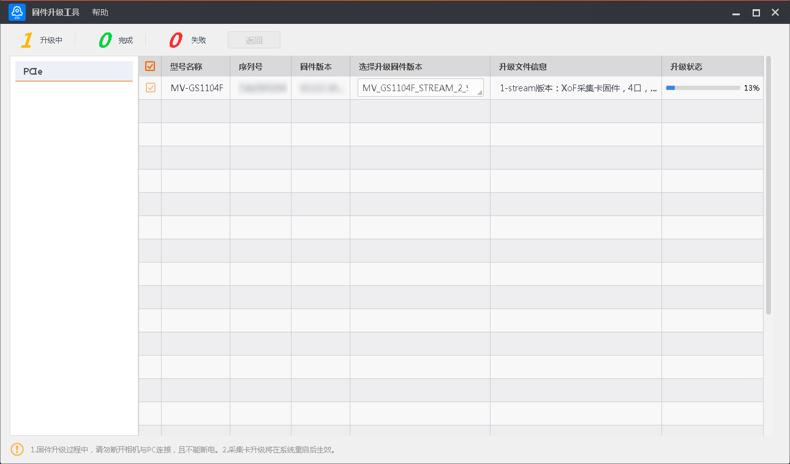

采集卡升级
采集卡的固件升级过程主要分为三个阶段，即。
搜索设备
打开固件升级工具后，在工具界面上方的选择类型处下拉选择采集卡。工具界面左侧显示当前PC上PCIe接口的信息，如下图所示。

图 1 采集卡升级-
PCIe接口可自动枚举搜索到的所有采集卡设备，选中PCIe，右侧显示PCIe下的所有采集卡。
-
工具可自动刷新枚举PCIe下的采集卡，也可通过PCIe右侧的
 手动刷新枚举。
手动刷新枚举。
开始升级
请从海康机器人官网（http://www.hikrobotics.com）获取需固件升级采集卡的固件驱动包，单独安装在默认路径下：C:\Program Files (x86)\Common Files\MVS\FirmWare。安装完成后，工具即可检测到该采集卡匹配的所有固件文件。
确认需固件升级的采集卡处于可用状态并在工具右侧进行勾选，同时在对应采集卡的选择固件升级版本列下拉选择需要的固件版本，如下图所示。

图 2 选择固件版本工具支持模糊搜索采集卡匹配的固件文件，根据实际需求勾选模糊匹配即可。
工具可批量升级多个采集卡固件，最多可同时勾选20个采集卡。
完成固件升级版本选择后，单击升级按钮即可。
说明
-
升级固件过程中，请勿断开采集卡与PC的连接，并保证设备处于工作状态。
-
采集卡升级完成后需重启系统后生效。
升级状态
工具左上角会显示当前升级设备的升级情况，如下图所示。可通过工具上方的返回按钮返回工具的初始界面。工具右侧选中的设备也会显示具体的升级状态。

图 3 采集卡固件升级